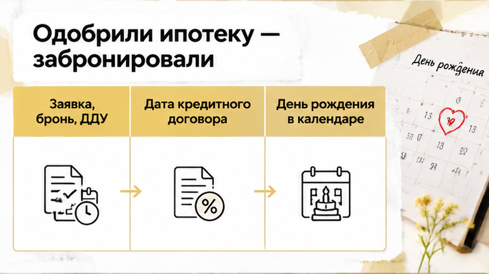
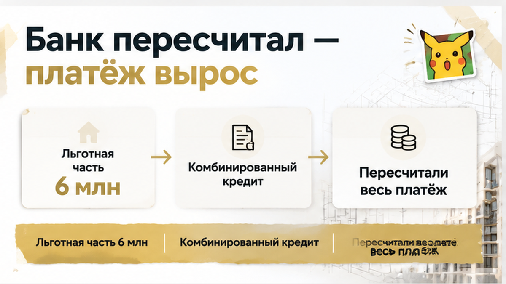
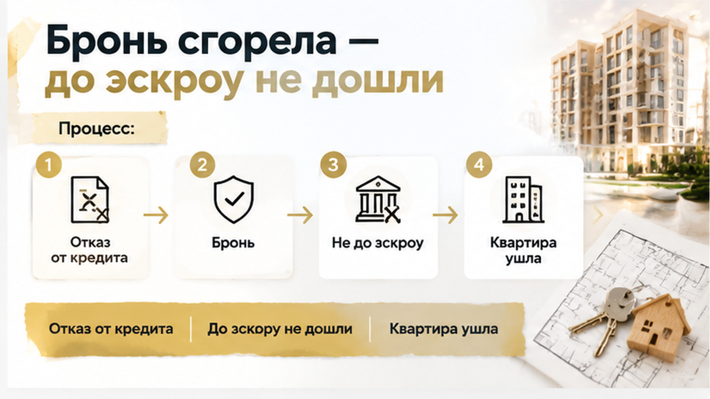

В Тюмени семья забронировала квартиру под семейную ипотеку до 6%, рассчитывая на одобренный банком платёж. На момент заявки младшему ребёнку было шесть лет, а через несколько недель ему исполнилось семь — ещё до заключения кредитного договора. Банк пересчитал условия, и сумма ежемесячного платежа перестала помещаться в семейный бюджет. До эскроу дело не дошло: семье пришлось отказаться от сделки, а срок брони закончился.
Я — Святослав Шакин, The Риэлтор, Тюмень. В Telegram и MAX разбираю такие сделки по новостройкам: где заканчивается бронь, какую дату смотрит банк и на какой дате нельзя ошибиться.

Семья с одним ребёнком выбрала квартиру в тюменской новостройке. На момент подачи заявки ребёнку было шесть лет, банк предварительно одобрил семейную ипотеку, после чего покупатели внесли плату за бронь.
В такой момент легко решить, что главное уже сделано: ставка понятна, первоначальный взнос посчитан, ежемесячный платёж укладывается в бюджет. Остаётся согласовать документы, подписать договор и открыть эскроу.
Бронь, однако, — не кредитный договор. Она удерживает квартиру или цену на определённый срок, если это предусмотрено договором бронирования. Условия государственной программы бронь не фиксирует, а предварительное одобрение не превращает в выданную ипотеку.
Пока покупатели согласовывали договор долевого участия, банк проверял документы, а застройщик готовил свою часть сделки, между сообщением «одобрено» и подписанием оставалось несколько шагов. В процессе могли понадобиться свежие сведения о доходах, составе семьи и праве на льготную программу.
Для семьи с одним ребёнком важен возрастной критерий: ребёнку должно быть не больше шести лет включительно на дату заключения кредитного договора. Не на дату заявки, не в день внесения брони и не обязательно в день подписания ДДУ.
Именно здесь бытовая логика даёт сбой. Родители помнят, что при подаче заявки ребёнку было шесть и банк ипотеку одобрил. В кредитной истории решающей становится другая дата: день, когда заключается кредитный договор.
Пока этот договор не подписан, право на льготу нельзя считать окончательно закреплённым. Предварительное решение — важный этап, а не финальная точка сделки.
После бронирования семья не могла просто приехать за ключами. Нужно было согласовать ДДУ, завершить проверку объекта, подготовить кредитный договор и организовать расчёты через эскроу.
В новостройке рядом стоят несколько дат: заявка, предварительное одобрение, бронь, ДДУ, кредитный договор, регистрация и открытие эскроу. Для покупателя это часто одна большая сделка. Для банка — разные юридические события, у каждого своё значение.
Решающей для семейной ипотеки становится дата заключения кредитного договора. Дата ДДУ её не заменяет. Если кредитный договор подписали до седьмого дня рождения ребёнка, последующее исполнение семи лет уже не отменяет оформленную льготную ставку. Если день рождения прошёл раньше, старое предварительное решение не сохраняет условия автоматически.
День рождения ребёнка стоит поставить в календарь рядом с планируемой датой подписания кредита. Когда между ними пять или семь дней, это уже не дата «на потом», а часть расчёта сделки. В такой ситуации важен не общий план продаж, а конкретный день, когда банк готов заключить кредитный договор.
Есть и другая тонкость. Изменение условий из-за возраста ребёнка — не то же самое, что повышение ставки банком перед ДДУ по собственным условиям кредитования. В первом случае меняется основание для участия в программе, во втором — параметры кредита. На практике эту разницу видно в истории, где банк изменил ставку перед ДДУ.
До заключения кредитного договора и перечисления денег на эскроу сделка ещё не прошла главную финансовую точку. Бронь при этом живёт по своему договору и своему сроку — она может закончиться раньше, чем банк поставит последнюю подпись.
До назначенного подписания ДДУ оставалось шесть дней, когда ребёнку исполнилось семь. Для семьи это был день рождения, для банка — изменение условия, на котором держался расчёт покупки. Кредитный договор к этому моменту ещё не заключили. Фраза «ипотеку уже одобрили» больше не закрывала вопрос.
В словах «до шести лет включительно» легко услышать не тот смысл. Пока ребёнку шесть, возраст подходит, даже если день рождения совсем близко. С семилетия это основание уже не действует: его нельзя сохранить датой старой заявки или оплаченной бронью. Банк смотрит возраст на дату заключения кредитного договора.
ДДУ — договор с застройщиком о будущей квартире — эту дату не заменяет. Документы идут одной цепочкой, поэтому покупателю кажется, что всё происходит в один день. Для программы важен другой момент: когда семья заключает договор на кредит. Не когда выбрала квартиру, получила сообщение об одобрении или договорилась с отделом продаж.
Если бы кредитный договор успели заключить до дня рождения, последующее семилетие ребёнка не отменило бы уже оформленную льготную ставку. Здесь до этой границы не дошли. Поэтому перед бронью профессиональный вопрос звучит так: «На какую дату банк готовит кредитный договор и сохраняется ли к этому дню право на программу?» Несколько дней могут определить, останется ли покупка посильной для семейного бюджета.

Перед оформлением кредита банк заново проверил право семьи на льготу. Ребёнок один, возрастное основание уже не действовало — прежний расчёт со ставкой до 6% больше не подходил. Это не история о том, что банк внезапно отказался дать деньги. Предварительное решение было сделано при одних условиях, а к подписанию кредита одно из них исчезло.
Для покупателя разница выглядит просто: вчера сходились собственные накопления, сумма кредита и ежемесячный платёж. После пересчёта эта связка распалась. На прежних условиях нужную сумму уже не выдавали, а другой кредит означал иную нагрузку. Квартира дешевле от этого не стала, и свободных денег в семейном бюджете не прибавилось.
Рыночный кредит банк мог рассмотреть отдельно, однако семейную ипотеку один к одному он не заменяет. При более высокой ставке платёж растёт, а доступная сумма иногда, наоборот, уменьшается. Точный результат зависит от доходов, действующих долгов, первоначального взноса и расчёта конкретного банка. Поэтому обещать семье, что достаточно будет «немного доплатить каждый месяц», здесь нельзя.
В Тюменской области льготная часть семейной ипотеки ограничена 6 млн рублей. Если на покупку требуется больше, возможна комбинированная схема: одна часть кредита идёт по льготной ставке, другая — на условиях банка. Цена квартиры и сумма льготного кредита — разные вещи. Когда право на программу пропадает, пересчитывается не одна строка в заявке, а весь будущий платёж.
Со стороны это напоминает случай, когда банк изменил ставку перед ДДУ: вместо ожидаемых цифр покупатель видит новый расчёт. Причина здесь другая, и смена банка сама по себе возрастное условие не отменяет. Семье нужно было решить уже не вопрос «нравится ли нам квартира», а вопрос «сможем ли мы платить по новым условиям». Внесённая бронь этот платёж посильнее не делала.

Семья отказалась подписывать кредитный договор и ДДУ по новому расчёту. Срок брони закончился, прежнюю цену застройщик не продлил — выбранная квартира на таких условиях ушла из планов. Брать неподъёмный кредит только потому, что за бронь уже заплатили, семья не стала.
С платой за бронирование есть отдельный вопрос: её возврат зависит от текста договора. Оплата услуги, аванс и сумма с оговорёнными условиями возврата — не одно и то же. Поэтому слова «бронь сгорела» прежде всего описывают потерю закреплённой квартиры и цены, а не доказывают, что потеряна вся внесённая сумма. Обещать возврат без проверки договора было бы неправильно.
До перечисления денег на эскроу дело не дошло. Семья остановилась до регистрации ДДУ и не взяла на себя платёж, который уже не помещался в бюджет. Это не счастливый финал: время ушло, квартиру придётся подбирать заново, а с платой за бронь ещё предстоит разобраться. И всё же потерянная бронь не стала причиной соглашаться на долг, с которым потом жить годами.
Если ребёнку исполняется 7 лет перед ДДУ, стоит ли торопить сделку или сначала снять бронь и искать другой банк?
Другой банк стоит искать под понятный вариант кредита, а не в надежде, что там не заметят день рождения. Смена банка сама по себе не возвращает утраченное основание для льготы. До оплаты брони нужно собрать в одном месте несколько дат и условий — не ради отдельной папки, а чтобы понять, можно ли двигаться к выбранной квартире.
| Что сверить | Что нужно знать до оплаты |
|---|---|
| День рождения и подписание кредита | Ребёнку ещё нет семи именно на дату кредитного договора. Дата заявки, брони или ДДУ её не заменяет. |
| Решение банка | Какие проверки ещё впереди и что произойдёт с заявкой, если подписание перенесут. |
| Договор бронирования | Когда заканчивается бронь, можно ли её продлить и вернут ли плату при изменении условий кредита. |
| Полный расчёт | Сколько потребуется собственных денег и каким будет весь платёж, включая рыночную часть, если кредит комбинированный. |
Для ребёнка с инвалидностью действуют отдельные основания — до 18 лет. Для семей с двумя и более детьми предусмотрены свои условия и ограничения по территории. Автоматической замены возрастного основания для этой семьи они не дают. И одобрение ипотеки ещё не означает, что сделка дошла до эскроу: между этими событиями остаются проверки, которые нельзя заменить обещанием «всё успеем».
Когда квартира уже выбрана, остановиться трудно: кажется, что вся проделанная работа пропадёт. Покупатель при этом не обязан спасать сделку за счёт собственного бюджета. Пока обязательства не подписаны, можно взять паузу, получить окончательный расчёт и решить, подходит ли покупка семье, а не только графику продаж.
Дату семилетия лучше сверить с банком до брони. Не пытаться потом втиснуть документы в оставшиеся дни, а заранее выяснить, реален ли срок и что произойдёт при переносе. Тогда отказ от неподходящей квартиры остаётся решением покупателя, а не попыткой в последний момент остановить платежи, которые уже стали обязательными.